What a SEDEX deposit is
means sedimentary exhalative. Fluid with metals flows out (exhales) into a reduced sedimentary basin inside a continent or on its edge. The metals are deposited as sulphides on the basin floor and just below it. The fluids are salty brines. They are warm, not hot: above about 80 °C and mostly below 200 °C. The ore bodies are flat and tabular, with more zinc than lead ( and ), some silver, and often as gangue. The ore is in layers between iron sulphides (pyrite and pyrrhotite) and the sedimentary rocks of the basin. This is why most geologists think these deposits are : they formed at the same time as the sediment. slide 7
They belong to a group of hydrothermal exhalative deposits. deposits are linked to volcanic rocks (Lecture 10). SEDEX deposits, also called sediment-hosted massive sulphide (SHMS) deposits, are in sedimentary basins. and Irish-type deposits are covered later in the course. slide 6
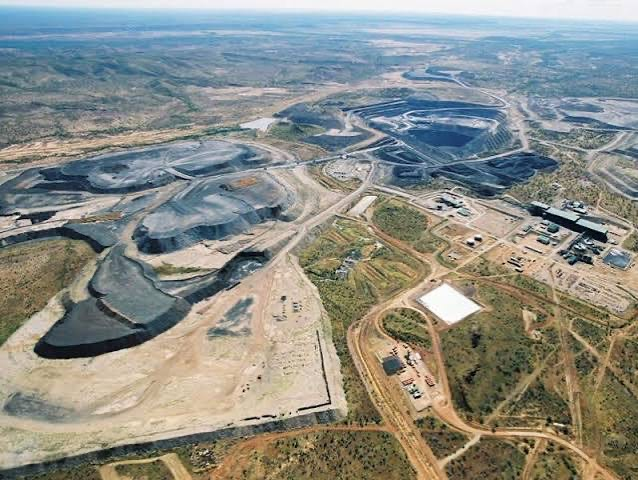
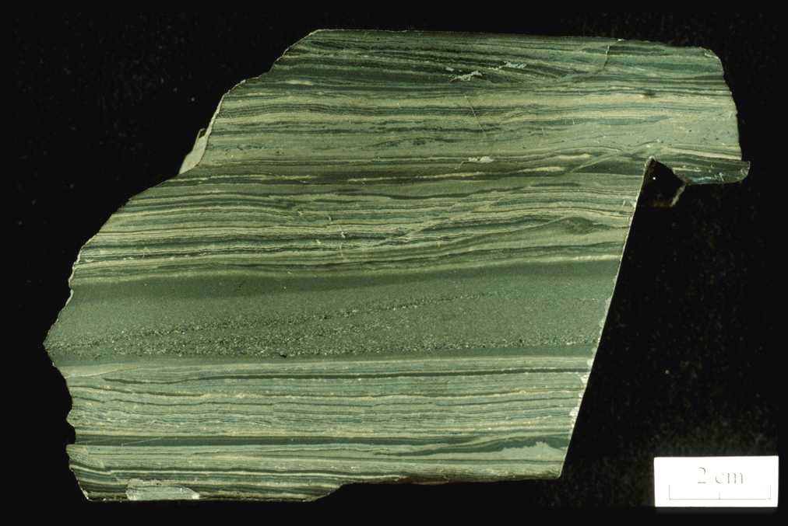
Before you read anything, describe the layering. How thick are the layers? How continuous are they? Are they all made of the same material?
Show what I see
- The layers are millimetres thick, very flat, and continuous across the 10 cm slab. There is only gentle wavy disturbance.
- There are three kinds of band: thin pale layers, thin dark layers, and one thicker, speckled grey band with a sharp base that becomes finer upwards.
- No veins cut the layers. There is no breccia and no lump of massive sulphide.
So this is sediment that was deposited layer by layer. The thick graded band is a . The dark layers are black shale, and the thin layers between them are sphalerite and galena. The sulphides were deposited together with the mud, layer by layer. This is the main observation behind the syngenetic model.
This is the surprise of SEDEX: the name "massive sulphide" is not really correct. Most of the ore is fine sulphide in thin layers (laminae) between shale and siltstone layers. It is not a solid lump of sulphide. A piece of Century ore is just a black carbonaceous siltstone with a little sphalerite and galena along the layers and fractures. It looks plain, but these deposits are world class. lecture recording, 2 Oct
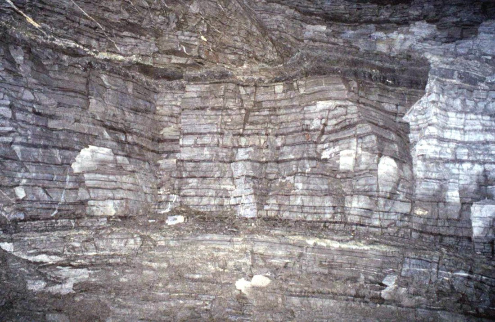
Please check this: the recording says HYC only started producing in about the last five years. In fact, the McArthur River mine has been operating since the mid 1990s, when ultra-fine grinding first made it possible to process the ore. The main point is still true: the fine grain size stopped it from being mined for decades.
- SEDEX: venting of saline brine (about 80 to 200 °C) into a reduced intracratonic or epicratonic sedimentary basin.
- Tabular, Zn > Pb (sphalerite, galena) plus Ag, barite gangue, interbedded with pyrite, pyrrhotite and basin sediment.
- Fine laminated ore, mostly syngenetic; HYC is the classic example.
Why zinc and lead matter
Zinc has a long history. The Charaka Samhita, an Indian text from about 500 BC, mentions zinc that oxidised to "philosopher's wool" (zinc oxide). It was used as an ointment for the eyes and for open wounds. Zinc smelting moved from India to China in the 17th century, and the first European zinc smelter opened in Bristol in 1743. Zinc oxide is still used in calamine cream, antiseptic ointments and sunscreen. slide 2
Today, most zinc is used for steel (about 60%). The rest is used for die-cast alloys (about 13%), brass (about 11%), and oxides and chemicals (about 8%). Electric vehicle makers prefer galvanised steel for car bodies. Zinc coatings stop the frames of solar panels and wind turbines from rusting. Zinc-ion batteries are considered safer than lithium-ion batteries. Zinc can be 100% recycled without losing quality, but only about 30% of the zinc produced comes from recycled sources. slides 2 and 3
Who mines it, who holds it
Thousand tonnes of metal. USGS figures from slides 4 and 5. There is no reserve figure for Bolivia.
Australia is the world's third largest zinc producer and second largest lead producer, and it has the largest reserves of both. Much of this comes from SEDEX deposits. Sweden, the only large producer in Europe, mines VMS deposits instead. slides 4 and 5 lecture recording, 2 Oct
What a basin needs
Five things must occur together: an extensional setting; structures that control the shape of the basin and the fluid flow; a thick basin fill; large-scale hydrothermal fluid flow; and still (stagnant) water that contains H₂S. slide 10
The basin is a continental rift with 2 to 5 km of permeable clastic sediments, often with volcanic or volcaniclastic rocks. These coarse sediments are the that holds the brine. Above them are impermeable shales or carbonates deposited after the rifting. These are the . Without this cover, the fluid leaks away up the faults. Then you get slightly higher metal values everywhere, but no ore deposit. slide 11 lecture recording, 2 Oct
Something must heat the basin. SEDEX deposits form close in time and place to basaltic volcanic rocks, dykes and sills. These increase the geothermal gradient and drive convection. Mafic sills help, but they are not essential: any heat source that keeps the brine convecting will work. Fluid flows out at only a few vent sites, where extensional faults meet transform faults. The basin must also last a long time: 100 to 200 million years. slides 11 and 12 lecture recording, 2 Oct
The sea above must be . This means it is an enclosed basin, with no fresh seawater with oxygen flowing in. Evaporation continues, so a restricted basin also becomes very salty. The deep water fills with H₂S, and this H₂S supplies the sulphur that traps the metals. These are not black-smoker deposits. A SEDEX basin has one or two vent sites that last a long time, not fields of chimneys. lecture recording, 2 Oct
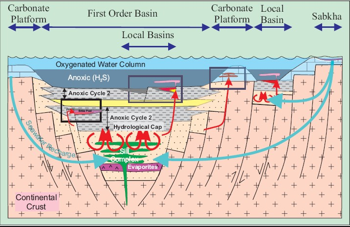
What’s missing from this basin?0 / 5
Building the McArthur Basin
The SEDEX basins of northern Australia formed in the Proterozoic, in a setting far from the arc. Subduction was to the south, under what is now the Arunta region, with an arc above it. About 500 km behind the arc, hot asthenosphere rose. It heated and thinned the crust, opened rift and sag basins, and supplied the heat that kept the brines convecting. The McArthur Basin and the Mount Isa Inlier both formed in this way, and both have many SEDEX deposits. slide 13 lecture recording, 2 Oct
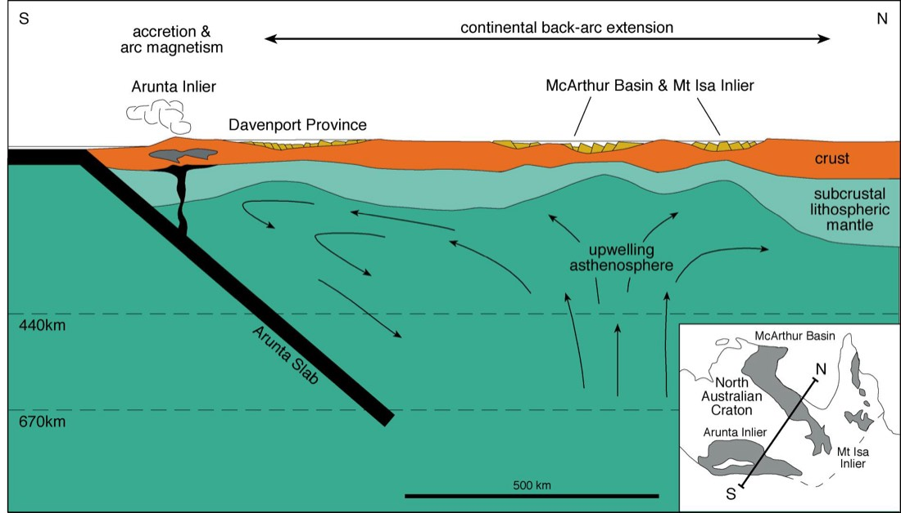
Build the basin, step by stepstep 1 of 4
The faults are deep and were active for a long time. HYC is next to the Emu Fault Zone. The nearby Hot Springs Fault got its name from the hot springs that are still on it. The Calvert and Tawallah faults form the edges of the Batten Trough. are important because they open (dilate) as they move, so fluid can pass through. Where two faults cross, they open even more. This is where you should look. slide 15 lecture recording, 2 Oct
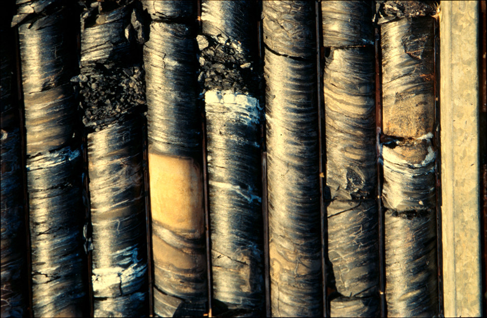
What colour is the rock? What is its grain size? What does this tell you about the water it was deposited in?
Show what I see
- Black to dark grey, very fine grained, with fine continuous layers. There is no sign of burrows that mixed the layers.
- One short pale interval, probably a bed with more carbonate.
So this is the typical host rock: organic-rich dolomitic siltstone. Black means the organic carbon was preserved. Fine layers that no animal disturbed (non-bioturbated) mean the bottom water had no oxygen. This is the anoxic basin floor with H₂S that is needed. Almost every SEDEX deposit is in rock like this. slide 45
Filling and breaking the aquifer
Deep in the coarse syn-rift sediments, compaction and metamorphic reactions produce hot, salty brine with metals. The impermeable cap holds the brine in. So the pressure rises until the aquifer is (geopressured) and breaks the cap rock. The brine is then focused up active faults. Focusing is essential for every ore deposit. If the flow is not focused, it only raises background metal levels. slides 17 and 45 lecture recording, 2 Oct
Brine does not flow steadily. Each small earthquake releases stress on the fault and opens it. A pulse of fluid passes through, and then minerals are deposited and seal the fault again. Each pulse adds another layer of sulphide. The basin goes through different anoxic cycles, so the ore lenses in one basin can have different ages. slides 17 and 26 lecture recording, 2 Oct
Load the aquifer0 pulses
Add sediment and heat the basin. Watch the pressure.
Put the Goodfellow and Lydon model in order0 / 7
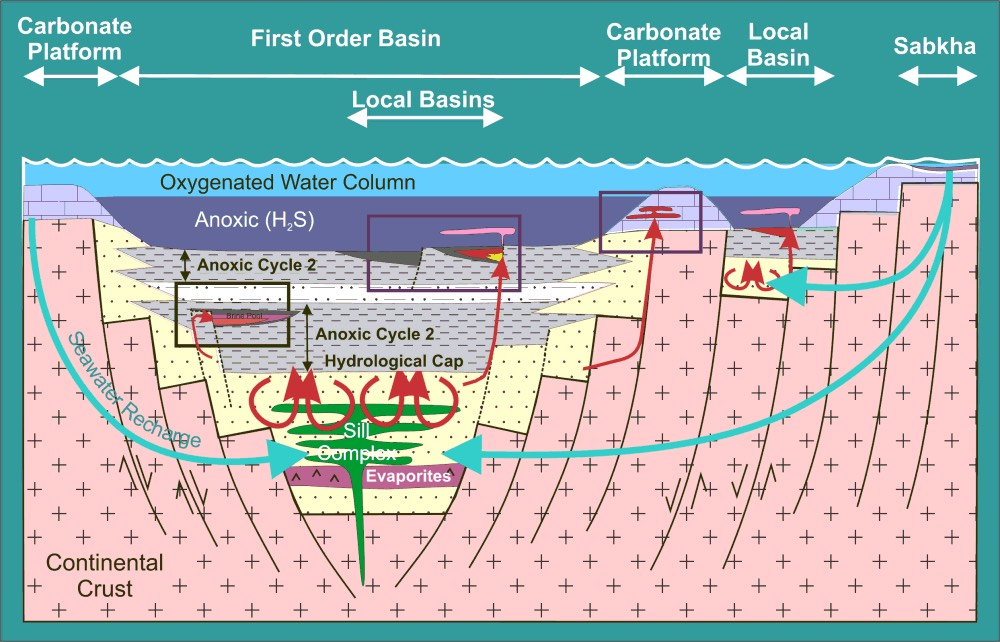
Vent-proximal or vent-distal: the brine decides
The structure of a SEDEX deposit depends on how close to the vent the sulphides form. This depends on the density of the brine. slide 18
deposits form from buoyant fluids that rise from the vent. They have alteration in the footwall, breccia pipes where overpressured fluid broke the rock, and coarser sulphide close to the vent. deposits form from brine that is denser than seawater. The brine flows away from the vent and collects in low areas on the basin floor. The sulphides are in layers with the sediment and are well laminated. There is no footwall alteration, no breccia zones, and there is related barite. One basin can have both types. slide 18 lecture recording, 2 Oct
| Ore fluid | Range |
|---|---|
| Salinity | 10 to 30 wt% total dissolved solids |
| Redox | reduced or oxidised |
| pH | acidic to near neutral |
| Temperature | 100 to 200 °C, nearer the low end |
slide 19; lecture recording, 2 Oct
Salt makes brine heavier, and heat makes it lighter. A vent-distal brine is more salty, cooler and oxidised. It is a dense brine that stays on the floor, as at HYC. A vent-proximal brine is less salty, hotter and reduced. It is a medium-density brine that rises a little but is not strongly buoyant, as at Sullivan in Canada. Go back to the brine at the top of the page and make each type. slide 20 lecture recording, 2 Oct
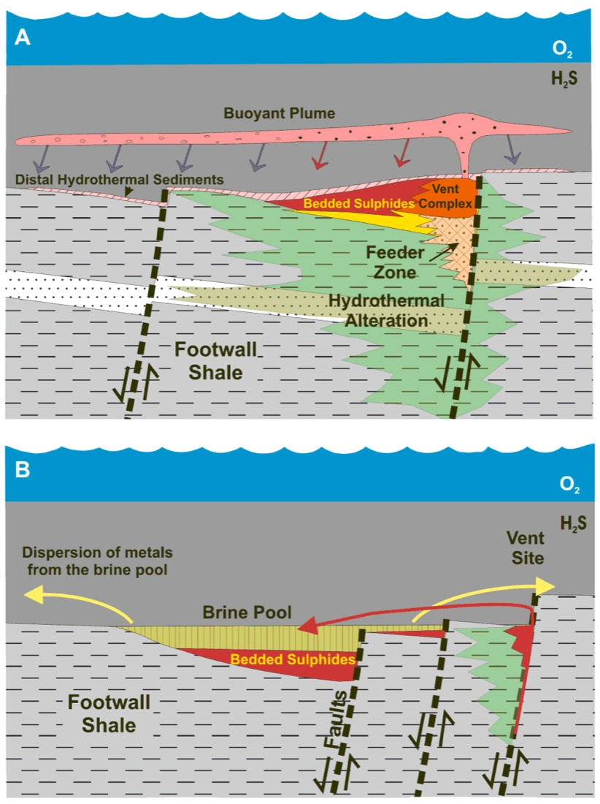
Proximal or distal?0 / 6
- Vent-proximal: buoyant fluid, footwall alteration, breccia pipe, coarser sulphide; lower salinity, higher T, reduced (Sullivan).
- Vent-distal: dense brine pooled in depressions, laminated sulphide, no footwall alteration, barite; higher salinity, lower T, oxidised (HYC).
- Fluids: 10 to 30 wt% TDS, 100 to 200 °C (maximum about 250 °C).
Fluids, metals and sulphur
Where does the brine come from? From seawater that evaporated at the surface. When seawater evaporates in shallow, restricted parts of the basin, the salty brine that is left sinks and moves down through the sediments. Water that dissolves evaporite minerals (mainly halite) below the surface adds more salt. slide 21
There are two types of brine. In basins with mostly shales and turbidites, like the Selwyn Basin and Sullivan in Canada, the brines are reduced (more H₂S than SO₄²⁻) and acidic. In basins with mostly sandstones and carbonates, like most of northern Australia, they are oxidised (more SO₄²⁻ than H₂S) and almost neutral. slide 22 (Cooke et al., 2000)
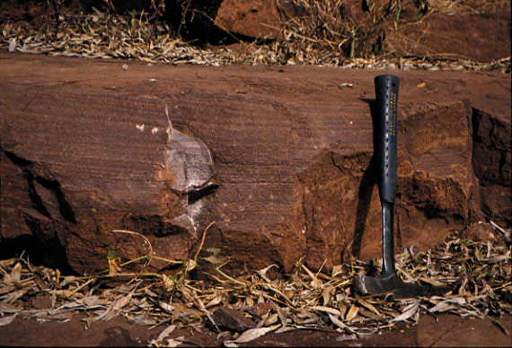
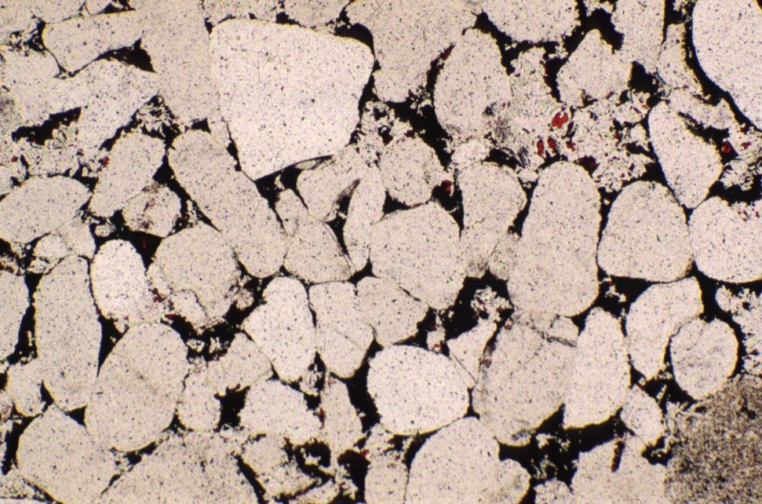
What gives the sandstone its colour? What does this tell you about the brine that moved through it?
Show what I see
- A: red-brown, well-bedded sandstone.
- B: rounded quartz grains, each with a thin dark coating. The coating is hematite.
So the colour comes from hematite (oxidised iron) coating every grain. The brine that moved through this aquifer was oxidised, which fits the pattern in northern Australia. In a reduced basin like the one at Sullivan, the grains would be coated with pyrite instead.
Why is the redox state so important? Because it controls how much metal the brine can carry. Zinc and lead travel as . They only stay dissolved while there is little reduced sulphur. Move the oxidation state slider below. slide 22
How much metal can the brine carry?
Curves read approximately from the plot on slide 22 (200 °C, pH 5, total sulphur 0.0005 molal, 30 wt% NaCl).
Oxidised brines with little sulphur carry much more metal. This is also why barium can travel with them. Barite is barium sulphate, and it is deposited as soon as the fluid meets sulphate. So barium can only move in a chloride brine with little sulphur. The fluids stay below about 300 °C, and this is why most of these deposits contain little copper. slide 3, notes
So where does everything come from? The metals come from the basin fill itself. Brine convecting through the aquifer, driven by the heat source, dissolves them. The sulphur comes from the seawater, as H₂S in the anoxic bottom water. When the two meet, the metal chloride reacts with H₂S and sphalerite is deposited:
ZnCl₂ + H₂S → ZnS + 2H⁺ + 2Cl⁻
Notice that the chloride goes back into the water. So depositing sulphide makes the bottom water even saltier. slides 24 and 25 lecture recording, 2 Oct The isotopes agree with this. Sulphur isotopes have a wide range, δ³⁴S from about -10 to +30‰, because the sulphur came from seawater sulphate that was reduced in different ways. Lead isotopes are uniform, with high μ values. This shows that the lead came from upper-crustal rocks inside the basin. slide 47
Where does each ingredient come from?0 / 4
Making the layers: a layered sea
The water in a SEDEX basin has layers. At the top there is an oxic layer, where Fe³⁺ is insoluble. Below it is a mixing layer, where H₂S meets dissolved Fe²⁺ and pyrite is deposited. At the bottom is the anoxic layer, with more H₂S than sulphate. Brine that enters this bottom layer meets H₂S and deposits sphalerite and galena. Pyrite and silt fall down from above. Clumps of sphalerite grow and sink to the floor by gravity. slide 28 (Ireland et al., 2004)
Three things build the layered ore: organic-rich mud that settles slowly from the water (pelagic), carbonate-rich silt that slides in from the shelf as mass flows, and pulses of zinc-lead brine caused by tectonic activity. Build some layers. slide 26 lecture recording, 2 Oct
Lay down the ore0 layers
Choose an event. Each one adds a layer to the basin floor.
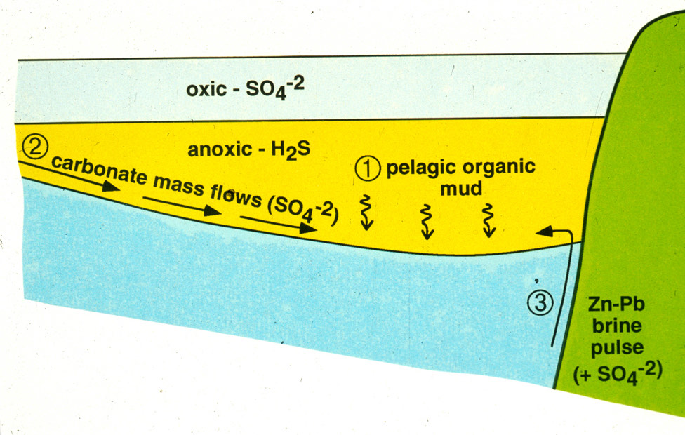
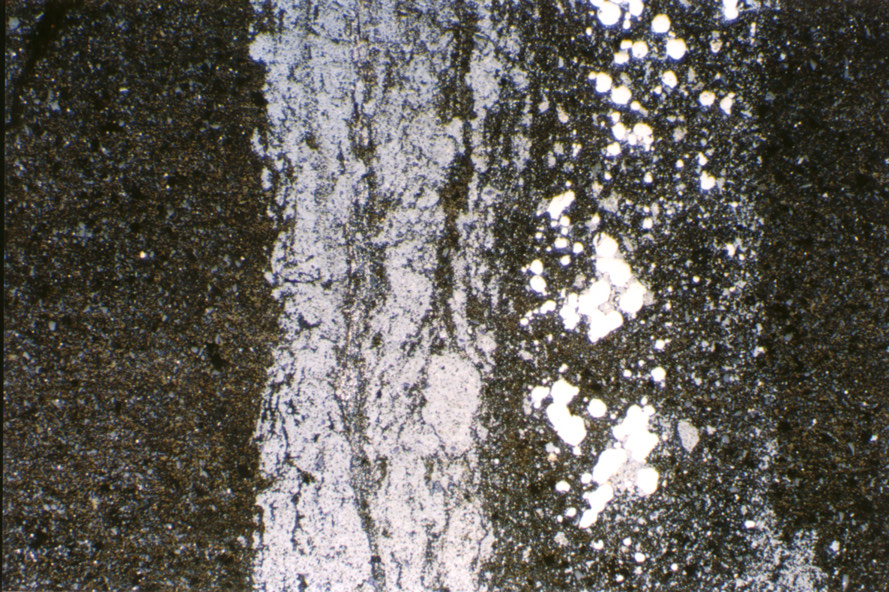
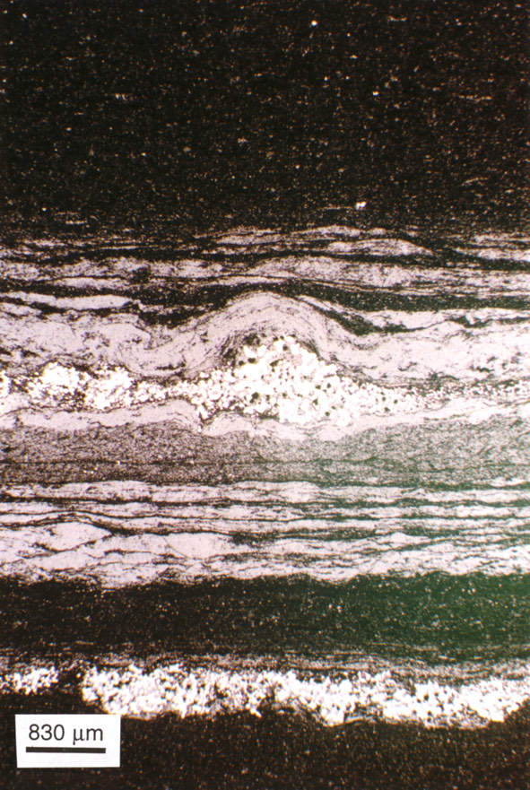
At this scale, does the ore look like veins that cut the rock, or layers in it? How thick are the pale bands?
Show what I see
- A: a band of fine sphalerite grains parallel to the layering, with rounded clumps of sphalerite scattered in the darker sediment next to it.
- B: pale sulphide bands, less than a millimetre thick, between dark carbonaceous mud layers. They curve gently over a lump.
So the sulphide is layered with the sediment; it does not cut it. There are very thin layers (microlaminae) of sulphide between layers of carbonaceous mudstone. The rounded clumps match sphalerite that grew in the water or brine and then sank. Notice how fine-grained everything is. This is why these ores are hard to process.
Not everyone agrees that all the sulphide flowed out onto the seafloor. Other models put it below the seafloor. One model is replacement of permeable layers soon after burial. Another is later tectonic replacement during deformation. At MacMillan Pass in the Yukon, Magnall and others suggested that barite formed first in the sediment and was later replaced by sulphide. Barite is barium sulphate, so incoming metals can react with it. They form sulphides and release barium, which is deposited again further away. At this deposit, sulphide veinlets that cut the layers, and sphalerite that replaces barite, support this model. But that is one small deposit. Most SEDEX deposits, and all the large ones, are best explained as exhalative and syngenetic. slides 27, 32 and 33 lecture recording, 2 Oct
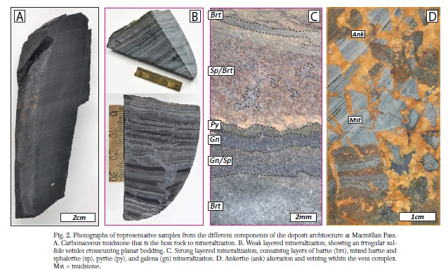
Anatomy of a deposit
SEDEX ore bodies have different shapes: mounds, lenses and sheets. The exhalative parts are about 20 times longer than they are thick (an aspect ratio of about 20:1). The internal structure is controlled by the distance from the vent and by the fluid chemistry. slide 35 Move through one from the feeder fault outwards.
Walk away from the vent
Zones and trends from the GSC summary figure on slide 34. The distances and the high, moderate and low levels are not to scale.
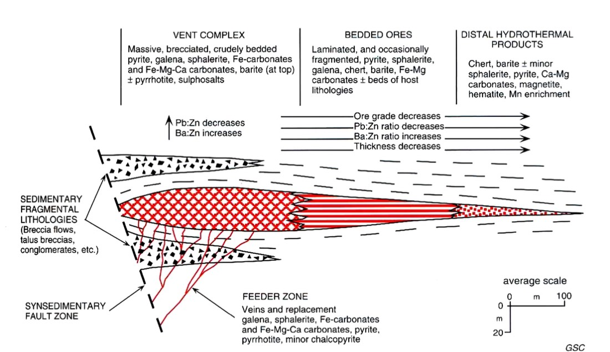
This increase in barium further from the vent is useful. If you find bedded barite, there is a very good chance that sulphide is somewhere in the same system. So barite beds are a classic sign for exploration. lecture recording, 2 Oct
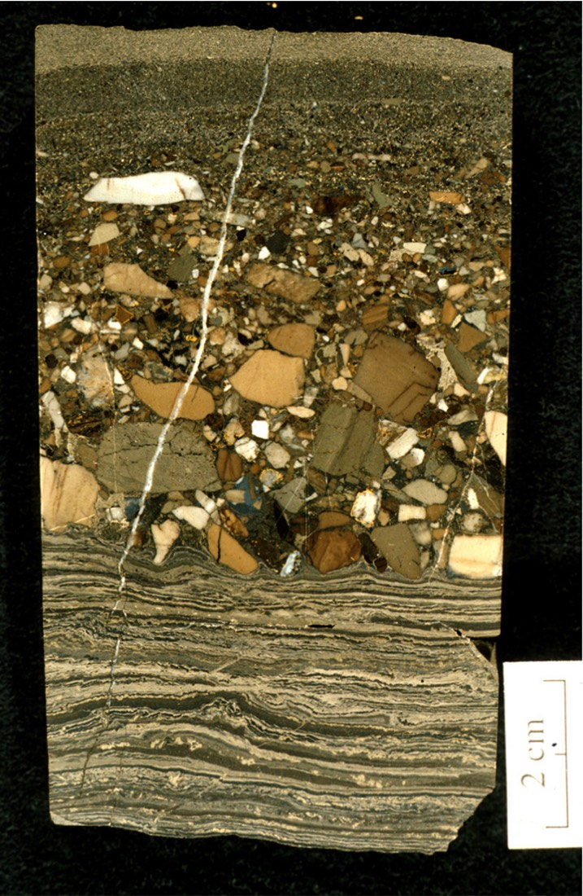
Describe the two parts of this slab and the contact between them. What happened, and in what order?
Show what I see
- Bottom: finely laminated ore, with gently wavy layers and an irregular top that looks slightly eroded.
- Top: a sedimentary breccia of angular to rounded clasts of different rocks. It becomes finer upwards into dark sand.
- A thin white vein cuts both parts, so it formed last.
So the laminated Zn-Pb ore formed first. Then a debris flow, probably from an active fault scarp, deposited breccia on top of it. Later, a vein cut through everything. Breccia on top of banded sulphide is unusual. Breccias like this show the vent area, where fault movement keeps producing broken rock. Mineralising fluid that passes through a breccia near a vent will mineralise it too.
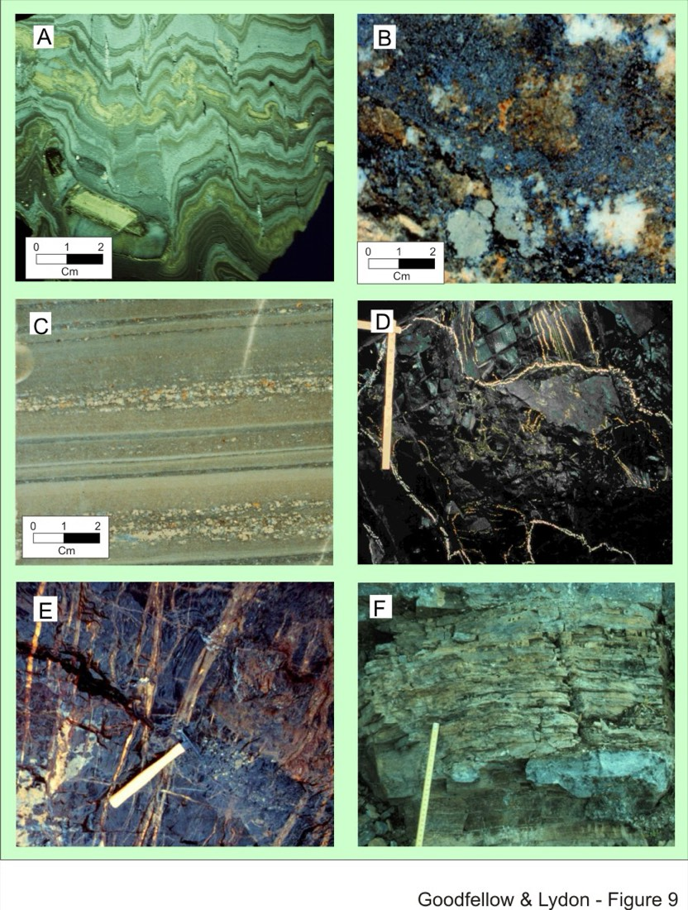
North Australian SEDEX deposits and their halos
The SEDEX deposits of northern Australia have several features in common. They are next to major, deep faults that moved while the sediment was being deposited, and they are in dolomitic black shales. They are mostly distal, with no feeder zones or vent complexes. Many have several ore lenses. Pb/Zn changes both sideways and upwards, because each new brine pulse has a slightly different chemistry. Most are rich in zinc. slides 38 and 39 lecture recording, 2 Oct
Around them are large stratabound halos that you cannot see by eye. Ross Large and colleagues mapped iron-manganese carbonate halos at HYC, Century, Mount Isa and Lady Loretta. The carbonate in the host rock becomes richer in iron closer to the ore: dolomite → ferroan dolomite → → . Siderite appears as brown carbonate spots right around the ore body. Ankerite appears as pale orange or yellow carbonate further out. There are also Mn and thallium halos, a SEDEX alteration index, and carbon, oxygen and strontium isotope halos. Thallium may be only a few ppm, compared with a background of one ppm, so you can only see it with ICP-MS assays. slide 40 (Large et al., 1998) lecture recording, 2 Oct
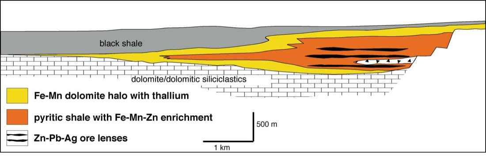
Vector in on the ore0 holes
Tap a drill collar. Each hole records the carbonate in the favourable layer (sid siderite, ank ankerite, Fe-dol ferroan dolomite, dol dolomite) and its thallium. Find the ore lens with as few holes as possible.
Invented game data. The carbonate sequence follows slide 40. The distances and thallium values are made up for teaching.
The deposits have different amounts of pyrite and siderite. Century has little pyrite and a lot of siderite. HYC has a lot of pyrite and little siderite. slide 47
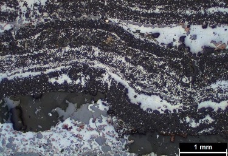
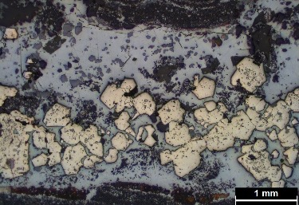
In B, the pale cream grains have straight edges and look pitted. Which mineral are they? What in A tells you that this is SEDEX ore?
Show what I see
- B: pale cream, high reflectance, hard (they stand higher and have pits from polishing), with crystal faces. These are euhedral pyrite grains, in a paler bluish-grey sulphide that is most likely galena.
- A: very fine, wavy layers of sulphide and dark carbonaceous sediment, millimetres thick, gently folded.
So you have fine-grained laminated sulphide with pyrite in carbonaceous sediment. This is typical of SEDEX. The galena in B is identified only from colour and reflectance, so treat it as likely, not certain. The gentle folds in A could be soft-sediment folds or compaction, not later deformation.
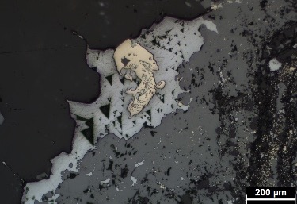
Look at the bright white mineral. What are the black triangles, and what mineral do they identify?
Show what I see
- Bright white, high reflectance, soft-looking surface.
- Sharp black triangular pits.
So it is galena. The triangles are cleavage pits, where cubic cleavage pieces were pulled out during polishing. The grey around it, with lower reflectance, is most likely sphalerite and carbonate gangue. The slide does not identify the cream grain inside it. From its colour alone, it could be pyrite.
Sphalerite can contain tiny inclusions of chalcopyrite, called . It is used as a sign of a higher temperature of formation. lecture recording, 2 Oct Check the temperature limit in your own notes: the recording gives both 140 °C and 240 °C here, and the computer-made transcript is unclear.
- The lab ore suites include Mount Isa and Lady Loretta polished blocks and hand specimens. Expect fine-grained, laminated sphalerite, galena and pyrite in dark carbonaceous, dolomitic siltstone.
- A Mount Isa hand specimen feels heavy for a plain black rock, because it is full of fine galena.
- In reflected light: galena white with triangular pits; pyrite pale cream, hard and often euhedral; sphalerite grey with low reflectance.
- North Australian SEDEX: next to deep syn-sedimentary faults, in dolomitic black shale, mostly distal, multiple lenses, Pb/Zn zoning.
- Carbonate halo toward ore: dolomite → ferroan dolomite → ankerite → siderite; plus Mn, Tl, C/O and Sr isotope halos.
- δ³⁴S -10 to +30‰; uniform, high-μ Pb isotopes from intrabasinal crust.
Where they are, how large they are, and how they were found
SEDEX deposits are found in only a few regions, because they need an unusual combination: a continental rift, an enclosed anoxic sea, and a change from permeable clastic rocks to impermeable shale and carbonate on top. Where you find one, there are usually several in the same basin. Northern Australia has more than anywhere else in the world. Others are in South Africa (Gamsberg, Broken Hill, Rosh Pinah, mostly strongly metamorphosed), Alaska (Red Dog), the Yukon (Howards Pass), British Columbia (Sullivan), Germany (Rammelsberg, mined since medieval times), Rajasthan in India, and western China. New South Wales has none, because it never had the right tectonic setting. slide 41 lecture recording, 2 Oct
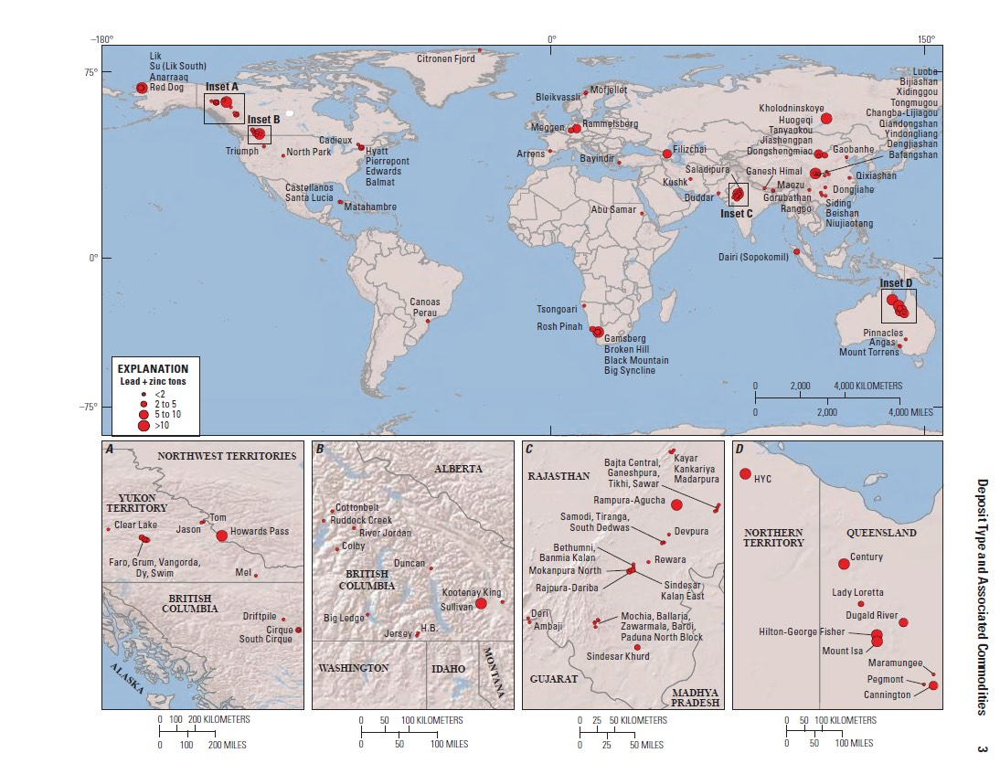
Around Mount Isa and the Gulf there are HYC (McArthur River) in the Northern Territory, and Century, Mount Isa and Hilton-George Fisher, Dugald River, Lady Loretta and Cannington in Queensland. There are also smaller ones, like Walford Creek and Bluebush. Cannington, which the lecture groups with these, is Australia's largest silver mine. slide 42 lecture recording, 2 Oct
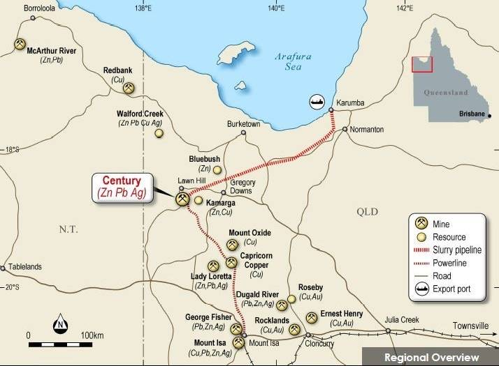
Large size also causes problems. Century was so large that its owners spent hundreds of millions of dollars on a slurry pipeline to the Gulf. A railway would have cost much more. Also, the far northwest floods in the wet season, which would stop a railway, and a mine this large must run 24 hours a day. Mount Isa already had a railway. lecture recording, 2 Oct
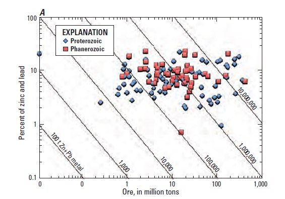
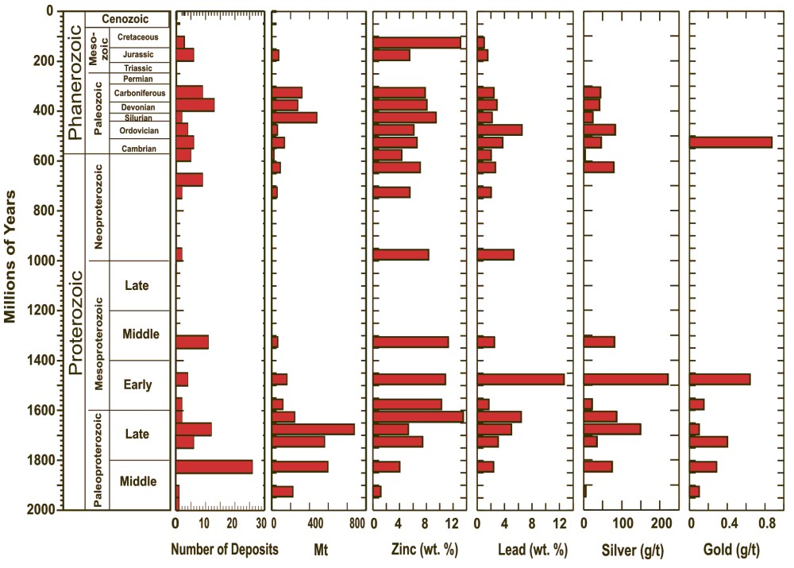
Grades are usually 5 to 20% Zn + Pb, and most deposits are less than 300 Mt, although some are much larger, like Red Dog. Some contain up to 2 wt% Cu, which is important at today's copper prices. By contained Zn + Pb, Hilton-George Fisher and Mount Isa together are the largest in the world, followed by Red Dog and HYC. Century was almost pure zinc, with very little lead. Through time, there are many in the middle Proterozoic (mostly in Australia), none in the late Proterozoic, and then many in the Phanerozoic (Europe and China). Very few contain gold. slides 43 and 44 lecture recording, 2 Oct
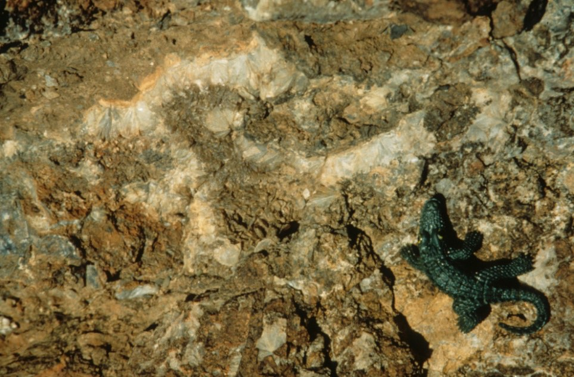
This weathered outcrop was the only sign of HYC at the surface. What is the white mineral, and why is it important?
Show what I see
- Brown, iron-stained rock with many holes: a small gossan.
- White crusts of fine, blade-shaped crystals.
The white mineral is , Zn₄Si₂O₇(OH)₂·H₂O, a zinc silicate that forms when zinc sulphide weathers (the supergene process from Lecture 2). A very small gossan with a little hemimorphite was the only sign at the surface of what became Australia's largest SEDEX deposit. Syd Carter and Ron Beresford recognised it. slide 46
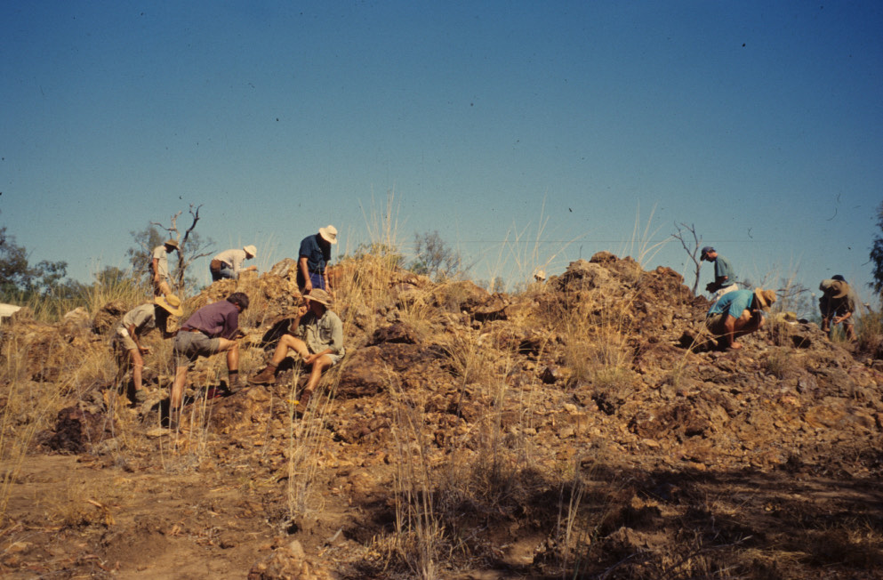
Exploration manager’s desk0 / 3
- Grades 5 to 20% Zn + Pb, mostly under 300 Mt (Red Dog much larger); up to 2 wt% Cu.
- Biggest by Zn + Pb: Hilton-George Fisher and Mount Isa, then Red Dog, HYC; Century almost all zinc.
- Mid Proterozoic (Australia) and Phanerozoic (Europe, China); a late Proterozoic gap.
- HYC was found from a tiny hemimorphite gossan.
Self-test
Answer each question out loud or on paper before you open it. If your answer was right, claim the ounces.
Glossary and flashcards
These are terms that the lecture expects you to know, or only explains briefly. Tap a dotted word in the text to see its meaning.
Flashcards
Where this goes next
Lecture 10 covers VMS deposits, which are related deposits hosted in volcanic rocks. There, the vents are hotter, and the sulphide really is massive. Remember the proximal and distal ideas from this lecture: the same density rule decides whether a vent builds a mound or a pool of brine. The modern vents in Lecture 6 are the living version of both.